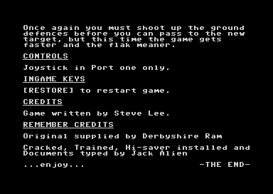

<meta charset="utf-8">
<meta name="viewport" content="width=device-width, initial-scale=1">
<title>{{title}}</title>
<link rel="preconnect" href="https://fonts.googleapis.com">
<link rel="stylesheet" href="https://fonts.googleapis.com/css2?family=Lato:wght@400;700;900&family=IBM+Plex+Mono:wght@400;500&display=swap">
<link rel="stylesheet" href="reference/hunter-page.css">
<!-- tabs -->
<header class="hero">
  <p class="eyebrow">{{platform}} · {{year}} · {{publisher}}</p>
  <h1>{{title}}</h1>
  <p class="sub">A second tune nobody hears, a stick that dives when pushed up, a target that always darkens in the middle, and what the cracker added.</p>
</header>
<main class="wrap">
<section id="unused-tune">
  <p class="fig">01 · Secret</p>
  <h2 class="t">Secret: a second tune with its own player, never played</h2>
  <p>The bytes from <a href="source.html#1000"><code>$1000</code></a> to <code>$116F</code> are a complete little music player, and its 28-second tune is at <a href="source.html#8200"><code>$8200</code></a>. Nothing in the game calls it: no instruction or pointer in memory names <code>$1000</code>, and none of it ran in play. Its start routine would take over the interrupt with a timer of its own, as Rob Hubbard's title driver does, and play three sawtooth voices that share one list of notes. Some of its zero-page bytes are reused by the game for other jobs, so it could not run alongside play. The <a href="music.html#unused">Music tab</a> plays it, run by its own code.</p>
</section>
<section id="stick">
  <p class="fig">02 · Quirk</p>
  <h2 class="t">Quirk: pushing the stick up dives</h2>
  <p>Up moves the plane down the screen and down moves it up, as a pilot's stick does. <a href="source.html#193c"><code>steer_plane</code></a> (<a href="source.html#193c"><code>$193C</code></a>) sets the climb rate <code>$37</code> to <code>$FF</code> for up, and the rate stays where the stick left it, so the plane goes on diving after the stick is let go. The <a href="controls.html#stick">Controls tab</a> has the test.</p>
</section>
<section id="sideways">
  <p class="fig">03 · Quirk</p>
  <h2 class="t">Quirk: the plane never moves sideways</h2>
  <p>The plane's x position, byte <a href="source.html#8060"><code>$8060</code></a> of the sky band's registers, holds <code>$A0</code> for the whole game: a search for instructions that can touch it finds only the interrupt's copy to the video chip. Left and right bank the plane's picture and change the scroll speed <code>$22</code>, and <a href="source.html#2220"><code>move_by_scroll</code></a> (<a href="source.html#2220"><code>$2220</code></a>) then slides every enemy, the flak and the target the other way.</p>
</section>
<section id="trainer">
  <p class="fig">04 · Secret</p>
  <h2 class="t">Secret: the cracker's trainer skips a level with the C= key</h2>
  <p>The menu after the loading picture offers trainers. Saying yes patches the game's call to the joystick routine so that it goes to the cracker's <a href="source.html#0d03"><code>$0D03</code></a> instead. Every eighth pass that routine looks at the keyboard row the KERNAL leaves selected, and when the C= key is down it sets the target hits to 64 and jumps to the end of the strafing runs (<a href="source.html#2aa7"><code>$2AA7</code></a>). The game then shows "WELL DONE - TARGET DESTROYED", gives the extra life, and moves to the next level.</p>
</section>
<section id="typos">
  <p class="fig">05 · Quirk</p>
  <h2 class="t">Quirk: two slips in the text</h2>
  <p>The prompt before each run reads "STRAFFING RUN AIRCRAFT NO." with two Fs (<a href="source.html#8b20"><code>$8B20</code></a>), and the message for a target with under 16 hits starts "TARTARGET UNDAMAGED-TRY AGAIN" (<a href="source.html#8c00"><code>$8C00</code></a>). Both are in the game's own data, not the cracker's.</p>
</section>
<section id="target-colour">
  <p class="fig">06 · Bug</p>
  <h2 class="t">Bug: a hit on any part of the target darkens the middle</h2>
  <p>A target is three sprites, and a hit should flash the part that was hit. <a href="source.html#2c00"><code>place_target</code></a> (<a href="source.html#2c00"><code>$2C00</code></a>) writes black into the colour of sprite 5, the middle part (<a href="source.html#80bc"><code>$80BC</code></a>), whichever part took the hit, and every sixteenth pass puts each part's colour back. Shooting the left or right end of a target therefore flashes the middle.</p>
  <p>The colour it puts back comes from byte 14 of each part's record, and <a href="source.html#2b00"><code>start_run</code></a> sets that byte to 1, white, for every level. Just before it, the code reads a byte from <code>$8000</code> plus the level (<a href="source.html#2bcf"><code>$2BCF</code></a>) and then throws it away by loading 1 over it. A colour for each level's target may once have stood there; in this program <code>$8000</code> holds the cartridge signature that RESTORE uses.</p>
</section>
<section id="silent">
  <p class="fig">07 · Quirk</p>
  <h2 class="t">Quirk: sounds that are prepared and never played</h2>
  <p>When the flak rises, <a href="source.html#2680"><code>$2680</code></a> sets <code>$09</code> to 1, and when it bursts <a href="source.html#2700"><code>$2700</code></a> sets <code>$80</code> there, but nothing reads <code>$09</code>: the flak is silent. The shot's sound, likewise, writes <code>$80</code> to <a href="source.html#0e00"><code>$0E00</code></a> when it ends, and nothing reads that either.</p>
</section>
<section id="music">
  <p class="fig">08 · Quirk</p>
  <h2 class="t">Quirk: the title tune stops dead when play starts</h2>
  <p>Rob Hubbard's driver runs from its own timer interrupt, which it installs before each title screen. When play starts, <a href="source.html#1370"><code>setup_raster_irq</code></a> (<a href="source.html#1370"><code>$1370</code></a>) turns the timer's interrupt off and points the vector at the game's raster routine, and the tune stops in mid-note. The driver's own stop entry, which would have silenced the voices, is never called. In play the sound chip has only the game's effects: the engine, which rises in pitch as the plane climbs (<a href="source.html#25a0"><code>$25A0</code></a>), the shot, the hits, and the crash. ZZAP!64 gave the sound 87 % and called the tune a "very good military tune, but gets monotonous".<sup class="fn"><a href="about.html#src-3" title="GameBase64 page, with the ZZAP!64 review">3</a></sup></p>
</section>
<section id="rating">
  <p class="fig">09 · Quirk</p>
  <h2 class="t">Quirk: a scratched target pays as well as a destroyed one</h2>
  <p>After the strafing runs, the game gives an extra life and the next level once the target has taken 16 hits (<a href="source.html#2ea1"><code>$2EA1</code></a>). The message for that is "TARGET PARTIALLY DAMAGED". Destroying the target, at 64 hits, earns the same life and the same level, so the three better results pay alike.</p>
</section>
<section id="cracker">
  <p class="fig">10 · Secret</p>
  <h2 class="t">Secret: the disk opens with the cracker's notes, not the game</h2>
  <p>The crack by Remember starts with a scrolling intro and a set of text pages, "Documents to Hunter Patrol". Their last page names the cracker's work: "Cracked, Trained, Hi-saver installed and Documents typed by Jack Alien", with "Original supplied by Derbyshire Ram".</p>
  <figure class="overview-shot"><figcaption>The documents' last page. The game's own credit is one line, "Game written by Steve Lee"; the rest is the cracker's.</figcaption></figure>
  <p>After the documents come the <a href="graphics.html#loading">loading picture</a> and a menu: "[H]ighscore or [T]rainers ??". The highscore saver is the cracker's too: <a href="source.html#0c55"><code>$0C55</code></a> saves the table as the file <code>H.PATROL HI /REM</code> after a name is entered, and the menu loads it back.</p>
</section>
</main>
<footer style="margin:16px 0 0;padding:22px var(--gx) 0;border-top:1px solid #e0ded8;font-family:'IBM Plex Mono',ui-monospace,Menlo,monospace;font-size:12px;color:#80838a"><a href="https://github.com/gamesexplained/gamesexplained" style="color:#1f5fa8;text-decoration:none">GitHub</a> · <a href="https://discord.gg/3V9GWyRDWV" style="color:#1f5fa8;text-decoration:none">Discord</a><br>© Games Explained contributors. Write-ups, facts and symbol maps are available under <a href="https://creativecommons.org/licenses/by-sa/4.0/" style="color:#1f5fa8;text-decoration:none">CC BY-SA 4.0</a>; code under <a href="https://opensource.org/licenses/MIT" style="color:#1f5fa8;text-decoration:none">MIT</a></footer>
